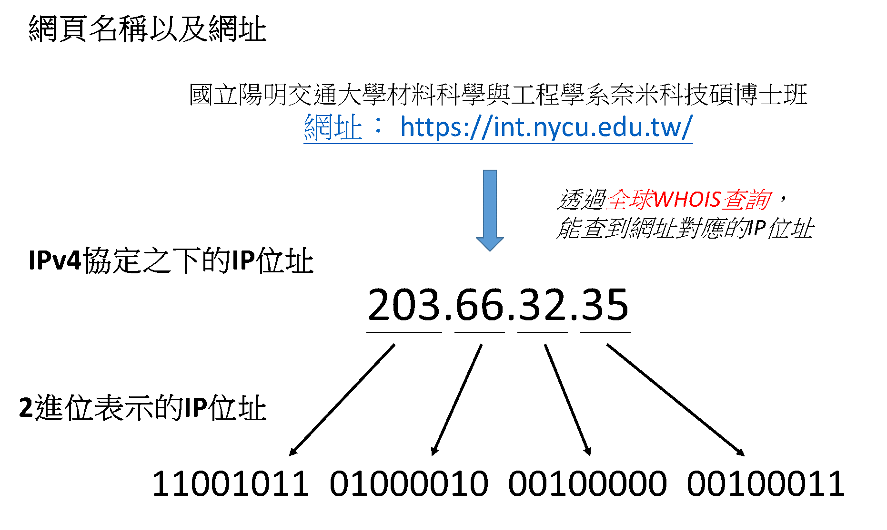

網路的IP位址
〈網路世界中的門牌號碼〉第一回
「網路」說白了其實就是好多台主機連接在一起所組成的。身處網路中的主機有不同的角色，可以是：
- 用戶端：就像我們用電腦連上網頁一樣
- 服務端：裝著網頁的內容、檔案、圖片等等，並且提供給需要的人
- 同時是用戶與服務端
當我們想要瀏覽網站的時候，首先要做的就是找到能夠提供內容的服務端，但是網路之中有成千上萬台主機，要怎麼找到我們需要的那一台呢？這個時候IP位址就顯得非常的重要。IP位址就像是網路世界中的門牌號碼，透過IP位址就可以找到我們所需要的那台主機。
IPv4與IPv6
目前有兩種表示IP位址的方式，分別是IPv4與IPv6通訊協定。從歷史的演變來看，是先有IPv4之後才有IPv6。IPv4是以32位元來表示網路世界中的特定主機，而IPv6則是用128位元來表示。會從32位元擴展到128位元很大的原因在於網路的普及率實在是非常高。來看一個簡單的計算：假如給每台主機分配一個IP位址，那麼根據《2022年世界人口展望》估計，預計2022年底全世界總共會有80億人。IPv4使用32位元來表示IP位址，所以總共會有2的32次方種不同的組合，大約是43億，很明顯的位址數量不夠用了！所以才會有IPv6的出現，它有2的128次方種組合，計算出的是個天文數字，就不用擔心IP位址不夠用了！話雖如此，目前普遍使用的還是IPv4，因為要使用IPv6就需要把所有的相關設備升級，而且它帶來的效果對一般的使用者而言實在是沒什麼感覺，所以在成本與成效的考量下，目前還是以IPv4為主流。
IPv4的介紹
IPv4是用32位元來表示特定主機的位址，每8個位元為一個單位，總共可以分成4個部分，並以10進位表示，數字中間用「.」來區隔。由於2的8次方等於256，所以每個數字的分布範圍從0到255，組合起來之後IPv4的表示可以從0.0.0.0一直到255.255.255.255。以「國立陽明交通大學材料科學與工程學系奈米科技碩博士班」的網站來舉例：

首先我們有一個小小的疑問，為什麼網址跟IP位址會互相對應呢？雖然說只要知道IP位址就可以找到我們需要的那台主機，但是每次要連上主機都得記住一串數字，不僅難記，也完全無法從IP位址得知網站的任何一點點資訊。但是當我們把一串有意義的文字跟IP位址關聯起來的時候，我們就能夠從這個字串預先了解即將連上的網站內容。像是例子中的網址https://int.nycu.edu.tw/，其中的int是Institute of Nanotechnology的縮寫；nycu是National Yang Ming Chiao Tung University的縮寫；edu代表教育機構；tw代表台灣。至於最前面的https代表著傳送網頁內容採用的通訊協定。透過一串有意義的文字組成網址，讓我們更容易記住這台主機的位置，也能夠事先對網頁內容有個大致的了解。提供「把IP位址跟一個網址關聯起來」這項服務的稱為DNS (Domain Name Server)。得到網站的IP位址之後，我們可以把這4個數字各自還原成8位元的2進位數字，於是就得到了11001011010000100010000000100011這一串2進位數字，剛好有32個，這也就是IPv4使用32位元表示網路中特定主機的意思囉！
小結
雖然在網路中有那麼多台電腦，但是只要透過IP位址就能夠找到我們想要的那一台。目前主流的表示方式是使用IPv4，是由32個0跟1組成的網路世界門牌號碼。雖然說一組IP位址能夠帶我們找到特定的主機，然而畢竟只是一串數字，實在是很難記得住，因此有了「網址」的出現，把一串有意義的文字跟某個特定的IP位址關聯起來。當然，IP位址也不是說完全沒有意義，還是有一些資訊包含在裡面，下一回我們就要來看看IP位址的分類與其他相關資訊例如子網路遮罩，以及面對快要不夠用的IP數量究竟該怎麼辦。

國立交通大學材料系奈米科技碩士班畢業(現在應該稱國立陽明交通大學ʕ •ᴥ•ʔ)。雖然非資工相關科系畢業，但本著對資工領域的興趣而開始自學相關知識，目前則專攻網頁相關知識，如HTML5、CSS3、JavaScript、Node.js。以跨領域學習者的角度來介紹資工領域相關的知識，除了加深自己對相關知識的理解，也期望同是跨領域學習的朋友們因為瀏覽我的文章而有更多不一樣的觀點可以參考。